纯旋转 warp 与深度平移重投影
同一张带深度（局部缺失）的源帧，分别做纯旋转映射和带深度平移重投影。报告并排检查快速转头、头部前移两种运动下的房间、近杆、静止高光、拒绝掩码、误差热图与越界采样。
快速转头时旋转映射本身正确：旋转路径 MAE 1.46，深度路径 MAE 1.83；主要差别是两者在帧边缘都留下拒绝区。前移 0.68 单位时纯旋转没有视差：近杆区域 MAE 65.57（覆盖 100.0%），深度重投影为 3.38（覆盖 100.0%）。旋转路径越界拒绝 50406 个采样，深度路径越界采样 0 次，另有 68424 个源投影落到目标画面外。
源帧与诊断底图
房间带有世界坐标网格、圆环和立柱；近杆在前景制造深度不连续；三个静止高光是世界锚定的亮点，不是屏幕空间 bloom。右上背墙的品红色块表示有颜色、无深度。

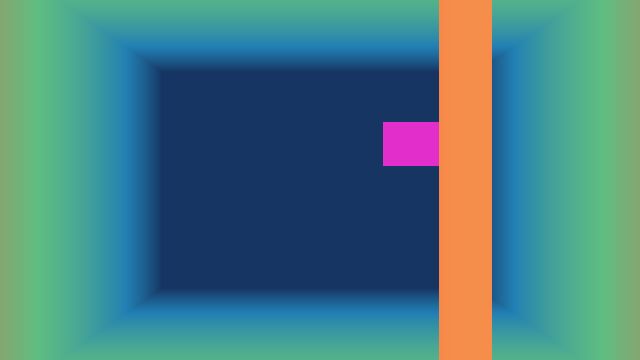
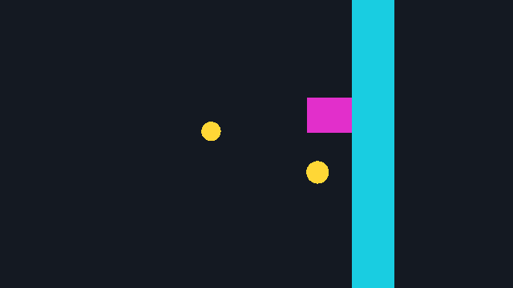
快速转头 / pure rotational motion
快速向右转头时，旋转映射本身与深度无关。纯旋转应贴合目标；深度路径用源深度重建同一视角，并在遮挡、缺失深度与画面边缘留下拒绝孔。
yaw +12.0°, pitch -2.0°, camera position unchanged
目标真值 / 纯旋转 / 深度重投影
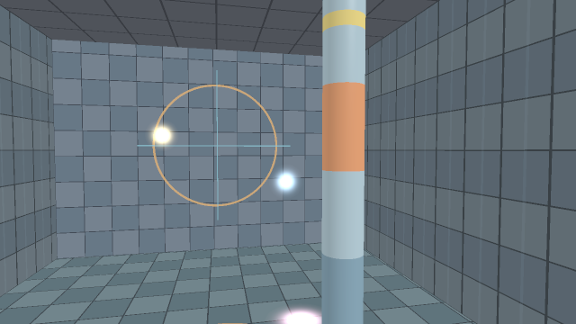
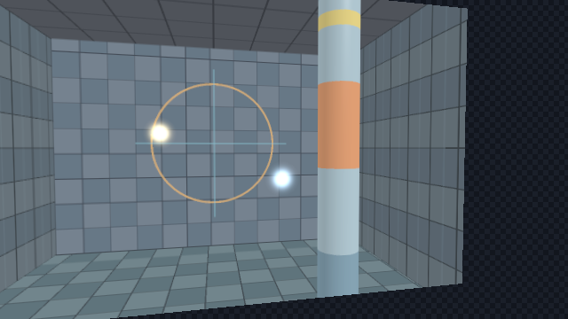
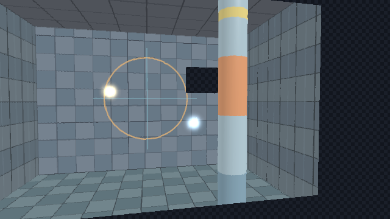
语义区域与拒绝掩码
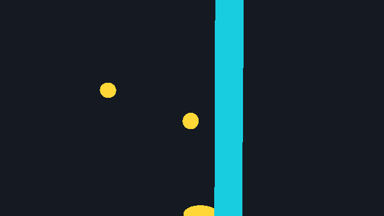
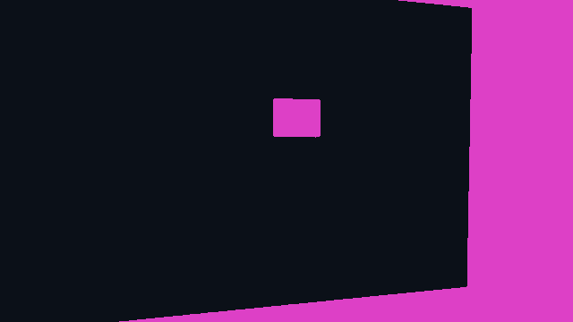
误差热图
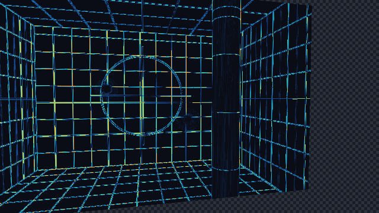
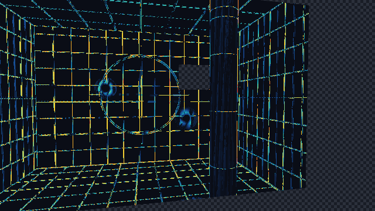
整帧指标
| 指标 | 纯旋转 | 深度重投影 |
|---|---|---|
| 覆盖率 | 78.1% | 77.4% |
| 有效像素 | 179994 | 178366 |
| 拒绝像素 | 50406 | 52034 |
| MAE (0–255) | 1.46 | 1.83 |
| RMSE (0–255) | 4.58 | 6.33 |
| 坏像素率 | 4.3% | 6.6% |
| 越界采样拒绝 | 50406 | 0 |
| 无覆盖空洞 | 0 | 52034 |
| 源深度缺失像素 | 0 | 2464 |
| 源投影越出目标 | 0 | 50438 |
分区检查
| 区域 | 旋转 MAE | 旋转覆盖 | 深度 MAE | 深度覆盖 |
|---|---|---|---|---|
| room | 1.56 | 77.1% | 1.94 | 76.3% |
| near pole | 0.38 | 92.8% | 0.60 | 93.0% |
| static specular | 1.02 | 58.8% | 3.25 | 58.8% |
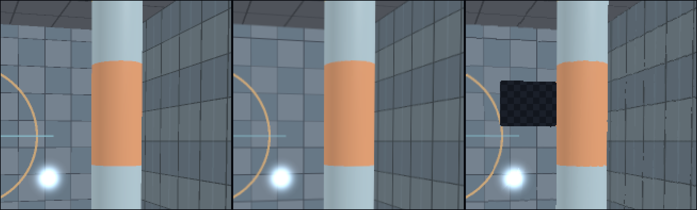
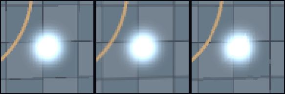
头部前移 / forward translation
头部前移时，纯旋转仍输出与源帧一致的画面，近杆相对背墙不会产生视差。深度重投影按每像素深度展开：近杆放大并横移，背景保持正确的远近关系。
camera position +Z 0.68, yaw = pitch = 0
目标真值 / 纯旋转 / 深度重投影
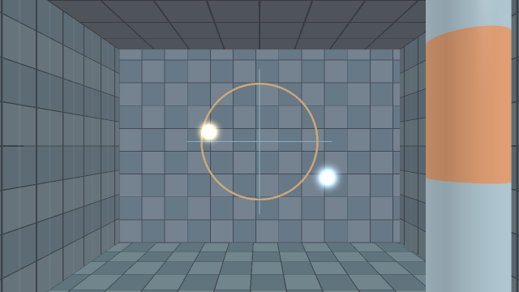
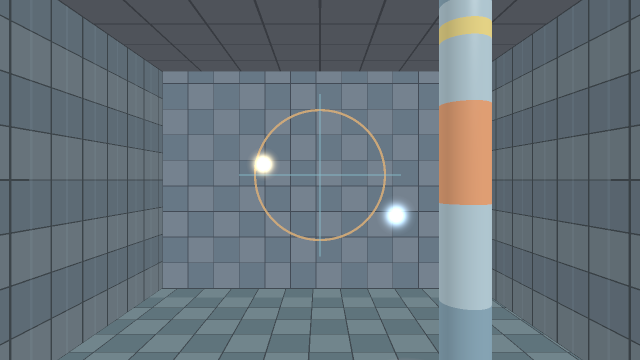
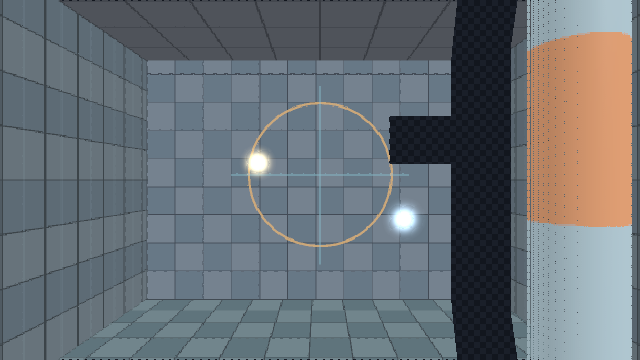
语义区域与拒绝掩码
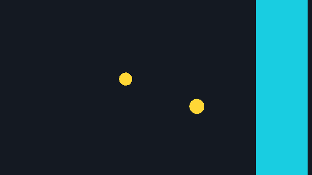
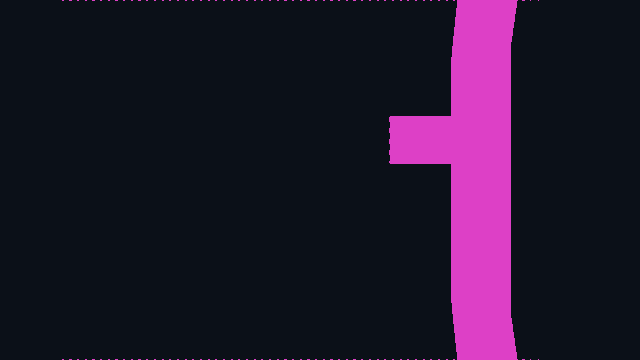
误差热图
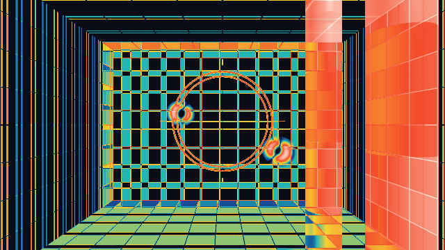
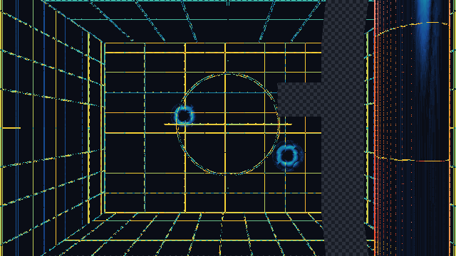
整帧指标
| 指标 | 纯旋转 | 深度重投影 |
|---|---|---|
| 覆盖率 | 100.0% | 89.3% |
| 有效像素 | 230400 | 205696 |
| 拒绝像素 | 0 | 24704 |
| MAE (0–255) | 22.26 | 2.36 |
| RMSE (0–255) | 38.94 | 9.11 |
| 坏像素率 | 51.3% | 8.2% |
| 越界采样拒绝 | 0 | 0 |
| 无覆盖空洞 | 0 | 24704 |
| 源深度缺失像素 | 0 | 2464 |
| 源投影越出目标 | 0 | 68424 |
分区检查
| 区域 | 旋转 MAE | 旋转覆盖 | 深度 MAE | 深度覆盖 |
|---|---|---|---|---|
| room | 13.42 | 100.0% | 2.11 | 87.1% |
| near pole | 65.57 | 100.0% | 3.38 | 100.0% |
| static specular | 48.69 | 100.0% | 4.49 | 100.0% |
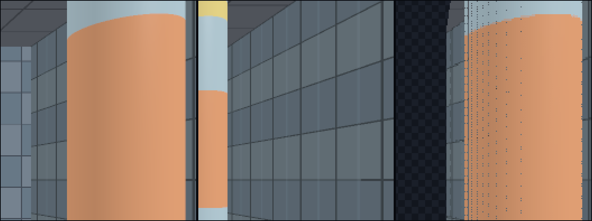
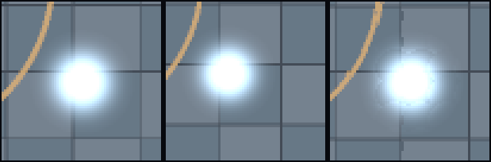
实测不变量
下面不是文字承诺，而是两个运动场景实际运行后从结果缓冲、拒绝掩码和采样统计中读出的数。
| 检查 | 实测 | 结果 |
|---|---|---|
| 纯旋转输出中标记为有效的深度像素 | 0 / 460800 | PASS |
| 纯旋转越界采样拒绝（两个场景合计） | 50406 | 原始帧外坐标被拒绝 |
| 深度路径越界采样次数（两个场景合计） | 0 | PASS |
| 源深度缺失像素（背墙 dropout） | 2464 | 保持空洞，不补采 |
| 源像素投影越出目标画面（两场景合计） | 118862 | 丢弃，不在边缘回采 |
约束与读图方式
纯旋转 warp 只使用两个姿态的相对旋转，输出 DepthValid=false（100%）。它也无法通过深度区分被遮挡表面，因此整帧颜色都按无限远旋转来映射。
深度路径对没有源深度的像素不做投影；目标是空洞并进入拒绝掩码，而不是用边界像素补洞。所有源采样坐标都先做帧内检查，越界直接拒绝。
颜色图例
误差热图：深蓝近 0，青色约 0.04，黄色约 0.09，红色约 0.22；灰黑斜纹表示该像素被拒绝，不参与 MAE。